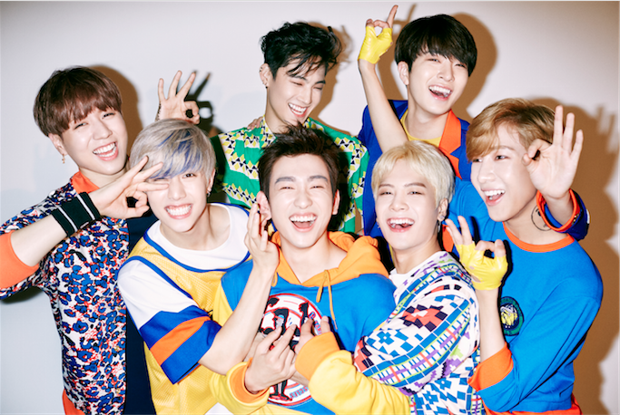

GOT7 介紹
韓國JYP娛樂於2014年推出的7人男子團體
GOT7的寓意為「7個幸運的人聚集在一起直到永遠」
官方應援物為綠色鳥狀手燈
官方粉絲名為「I GOT7」，意思是「歌迷們同時擁有了GOT7與幸運」
成員們也經常暱稱歌迷為「아가새」（發音為Ah-Ga-Se），是韓文「鳥寶寶」的意思
問候語為：「Come and get it GOT7！大家好，我們是GOT7。」
這句話的同時比出手勢，大拇指加上食指及中指，同時形成7跟T的手勢
由四名韓國成員JB、珍榮、榮宰、有謙，及三名外籍成員，分別是華裔美籍的Mark、香港的Jackson，以及泰國的BamBam組成，由JB擔任隊長。